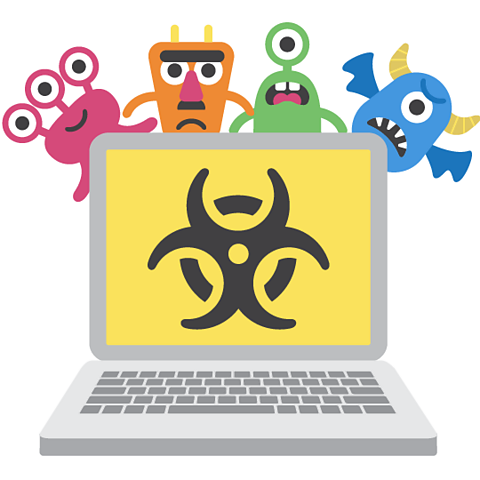
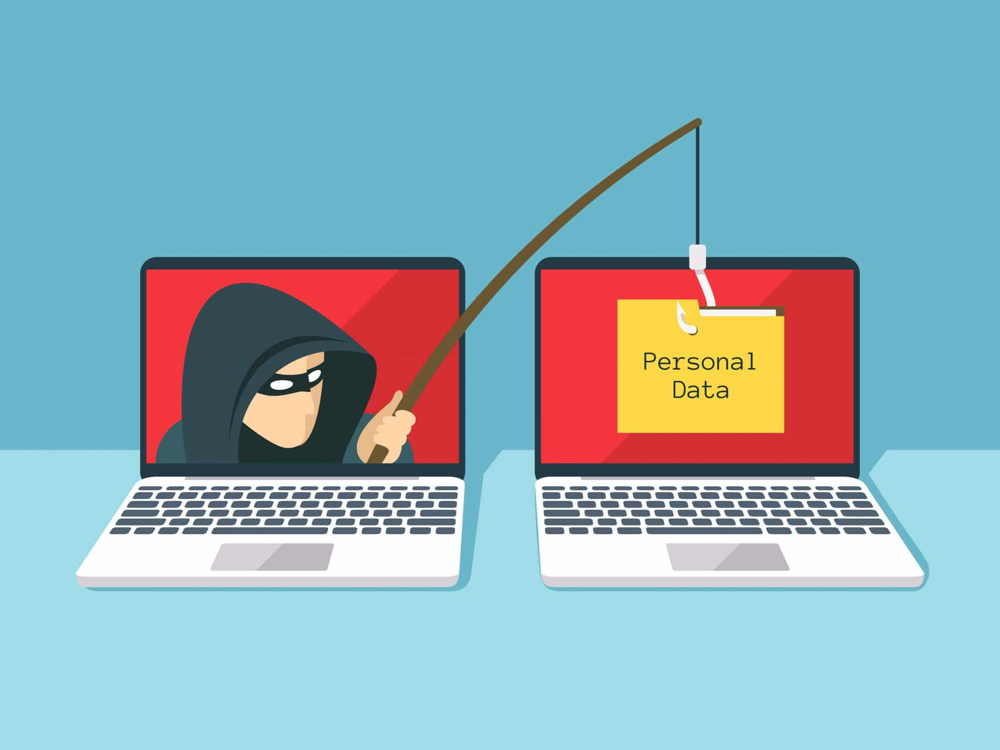
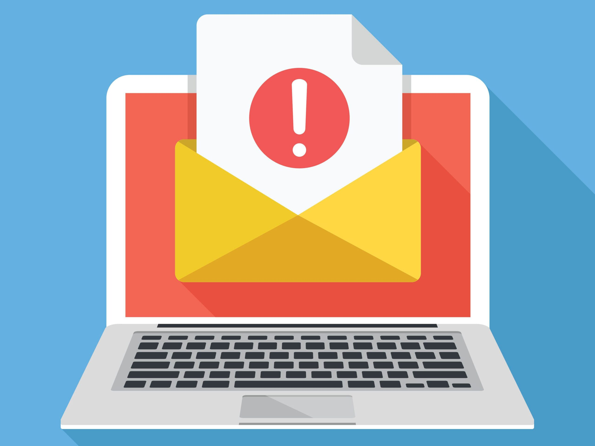

As the technological landscape of today continues to endlessly change and evolve, navagating the internet becomes more and more threatining. The threat of encountering one of these online hazards, such as malware, phising, or skimming is a scary thought for many. Among these however, malware is particularly malicious. The term malware includes in itself many different internet attacks, malicoius software, viruses, worms, trojand and ransomware. The ways in which one can be attacked while surfing the internet are almost endless. Though these all work differently, in general, the programs infiltrate your device, and siphon personal information, or disabling essential systems, rederding devices useless. The ramifications of these attacks can be increadibly serious for many, finicial losses, compromised personal or confidential data, or loss of function of your device.
Phishing, is yet another one of these cybersecurity attacks that people suffer from. In todays world where technology is an integral part of each and every one of our lives, the ways in which malicous actors attack your information and devices continute to evlove. Phishing scams are designed by these malicious actors to be carefully crafted emails, messages, websites, or others, that look innocent and trustworthy. This is done in order to get people to input sensitive data such as credit cards, bank accounts, social secuirty or more. These kinds of data leaks can be disablitating for some, who have lost thousands in these sorts of scams. Some phishing scams use these trustworthy looking messages, sites, or emails in order to get the user to download malicious software and malware onto your device. It is imperative that individuals inform themsleves, and be as cautious as possible when on the internet. Verifying the trustworthyness of webistes and the auuthenticity of messages and emails is ever more important in todays world. By keeping ourselves informed and vigilant and making these risks known to many, we can work towards stopping these scams from continueing to hurt people.
 In addition to threats like malware and phishing, insecure networks are an equally prevelant threat. Public Wi-Fi networks, while convenient, are also at times very dangerous and risky. Public Internet connections are used by malicous actors to exploit unsespecting users and access devices to steal information. These kinds of criminals instercept data that is transmited over their connections, aiming to find seneitive information. This data, is then used to either exploit users financially and steal from their bank accounts, or to use the personal data stolen to commit identity theft. Proactive measures can be implemented however. The best way to protect agaisnt insecure networks, is to use a VPN, or virtual private network. These softwares encrypt internet traffic being sent or received by your deviced. Using these softwares can help protect agaisnt these attacks, and make a safer experience on the internet for all.